Single-channel efficiency on the VMM cosmic bench
How we measure the absolute efficiency of one VMM channel (one pad) with cosmic muons: why the obvious way fails, counting in circles instead, scintillator-confirmed tags, closure tests and the real-data checks of the wk2 threshold scan.
The answer first. With the global thresholds of the November scan, one P2 pad records 75-80 % of the muons that cross it while its threshold sits 20-40 mV above its own baseline (P2_IN 0.75 ± 0.02, P2_MID 0.75 ± 0.03, P2_OUT 0.79 ± 0.02). Further up it falls: about 0.6-0.7 at 45-60 mV and 0.45-0.65 above 60 mV. Channels whose baseline sits above the threshold record nothing (0.000 ± 0.002). This page explains how that number is obtained, shows it moving in three small simulations, and shows every check on the real data.
- The question and the stand
- The obvious way, and why it fails (animation)
- Counting in circles (animation)
- Which tags are muons
- Does the method work? Simulated muons
- Checks on the real data
- The result
- How the method got here
- Limits and next steps
- Running it, glossary
The question and the stand
The efficiency of a channel is simple to say: of all the muons that cross its pad, which fraction does the channel record? It depends on how far the threshold sits above the channel's own baseline (in mV), and that is what we want to know to choose thresholds.
On the Saclay stand three P2 chambers lie flat, one above the other (P2_IN at z = 320 mm, P2_MID at 630 mm, P2_OUT at 940 mm), between two scintillator paddles that tell us when a muon really went through. We have no tracker, so the chambers check each other: a muon seen in two of them (a tag) predicts, with a straight line, where it crossed the third one (the probe). Then we look at the probe's pads.
Any of the three chambers can be the probe: for P2_MID the predicted point lies between the two tag hits (interpolation), for P2_IN and P2_OUT it lies outside them (extrapolation), which is less precise.
The obvious way, and why it fails
The obvious measurement: for every tag, find the pad under the predicted point and ask "did it fire?". The trouble is that the predicted point is not exactly where the muon crossed. The two hits that make the line are only known to about a pad (12 mm), so the prediction is off by ~3 mm in the middle chamber and ~8 mm outside. Whenever it lands on the neighbouring pad, the obvious method counts a miss, although the pad the muon crossed did fire.
Each ring is where a muon really crossed; the dot is where the other two chambers predict it. The pad lights up when it fired. A green dot is a naive success (the predicted pad is the one that fired); a red dot is a naive miss. Move σ: with 8 mm the naive number falls to about a quarter of the truth, whatever the true efficiency.
The real data say the same. With scintillator-confirmed muons the naive number is 0.17 (P2_IN), 0.40 (P2_MID) and 0.20 (P2_OUT): far below anything sensible, and lowest exactly in the two extrapolated chambers. The probability that a pad fires against the distance of the predicted point from its centre shows the smearing directly:
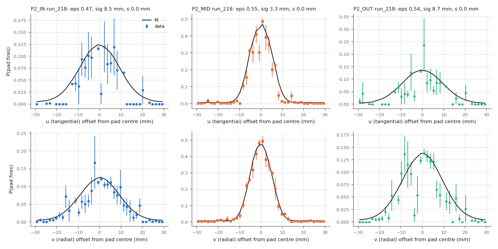
The lumps are a second surprise: the predicted points are not spread smoothly. The tag clusters sit on pad centres and the three chambers share the same pad lattice, so a straight line through two pad centres lands again on a pad centre (extrapolation) or exactly half-way between two (interpolation):
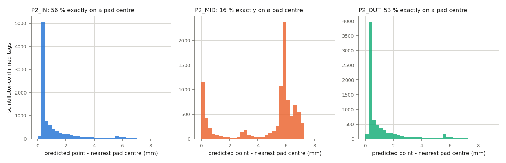
Counting in circles
The way out needs no knowledge of the smearing at all. The prediction error moves muons around, it does not create or remove them. So, for one pad:
times the pad fired = efficiency × (muons that really crossed the pad) + other hits
muons that really crossed the pad = muon density × pad area
The density does not need precise tracks: count the predicted points in a circle of 40 mm around the pad and divide by the area. Then count how often the pad fired for tags predicted within a radius R of its centre, and let R grow. While R is smaller than the smearing, some of the pad's own muons are predicted outside the circle and the count is too low; once R is a few times the smearing, all of them are inside, and the curve stops rising. That level is the efficiency.
Left: the predicted points around one pad (large dots: that pad fired; dashes: non-muon tags), the counting circle sweeping out to 80 mm and the 40 mm density circle (dashed). Right: the counting curve, firings within R divided by the expected crossings. It rises while R is about the size of σ and levels off near the true efficiency (dashed). Things to try:
- σ from 3 to 14 mm: the curve rises later but levels at the same height. The smearing drops out.
- lattice: predictions snapped to pad centres. The curve climbs in steps, and still ends at the same height.
- other hits: the pad sometimes fires with a muon that crossed elsewhere (crosstalk, delta rays, the cluster of another muon). Those come from everywhere, so they add a slow rise ∝ R². The estimate takes the value at Rlo = 40 mm minus that rise, measured from the points beyond 40 mm (the dashed line, drawn when the circle reaches 80 mm; its value at R = 0 is the estimate). With ~500 muons crossing the pad per simulation, it scatters by about ±0.04 around the truth; press restart to see it.
- non-muon tags: next section.
Two details make this exact on the real stand. Random hits (noise in the 200 ns window) are measured with the same tags in a window 4 µs later and subtracted. And the density is counted in pad cells, not in a circle: each tag belongs to the pad nearest to its predicted point, and the density is the tags in the cells around the pad over the area of those cells. Cells tile the plane, so this is right both for smooth and for lattice-like predictions, and it follows the edges and the masked pads.
K(R) = firings within R − random = ε · E + b · R² for R ≥ Rlo, ε = (K(Rlo) − b Rlo²) / E
Which tags are muons
The counting takes the predicted crossings at face value. A "tag" that is not a muon (two chambers firing at the same time because of correlated noise) predicts a crossing that never happened, and the measured efficiency drops by exactly the fraction of such tags. No counting trick can fix that (move non-muon tags in the simulation above). The off-time subtraction removes the random coincidences, but not correlated noise, and the stand has plenty (whole-chamber events, shared noise).
The fix is the scintillator coincidence: we keep only tags that come 140-310 ns after a signal of the scintillator coincidence channel (H0, VMM 0, channel 40). That is 26 746 tags of the scan, 10 % of all tags. Tick scintillator confirmation in the simulation: the fake tags disappear and the estimate goes back to the truth.
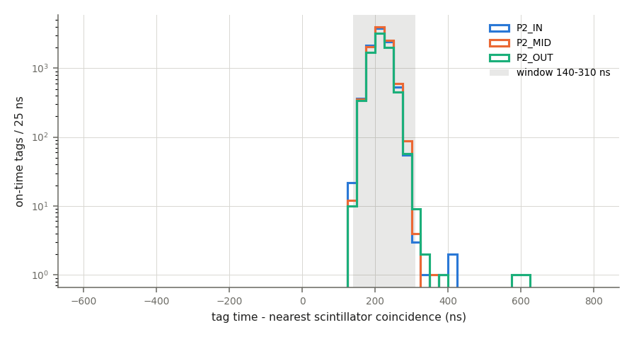
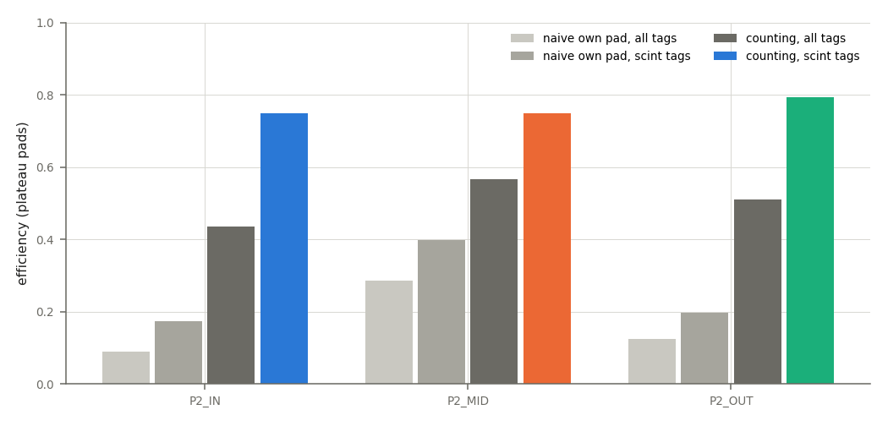
Does the method work? Simulated muons
Before trusting it on data, the code is run on simulated muons with a known efficiency (0.85), crossing a grid of
12 × 11.6 mm pads, measured exactly like the real ones (channel_efficiency.py toy; the same checks run
automatically in test_channel_efficiency.py).
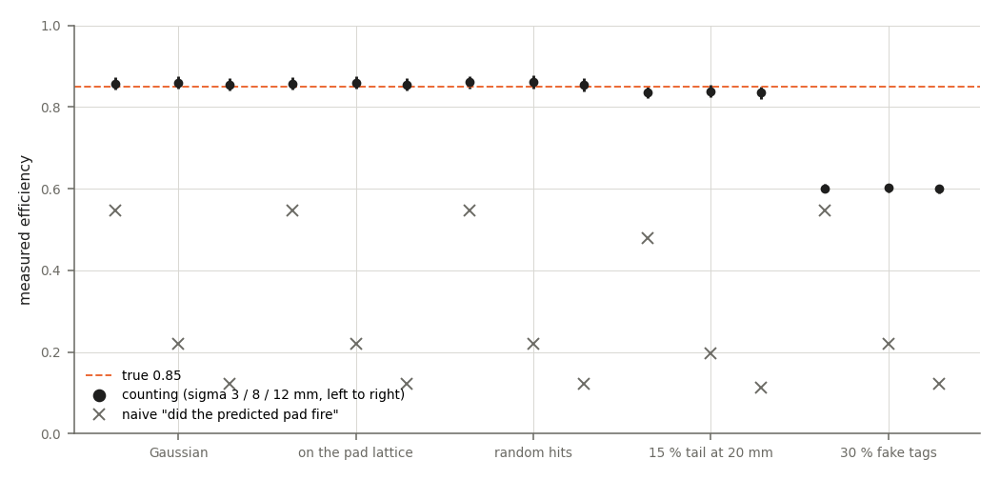
| simulated situation | counting result | what it shows |
|---|---|---|
| smooth smearing, σ = 3 / 8 / 12 mm | 0.85 / 0.85 / 0.85 (± 0.01) | the smearing drops out |
| predictions on the pad lattice | 0.85 / 0.85 / 0.85 | no smooth smearing needed |
| random hits | 0.85 | the off-time window removes them |
| 15 % of muons scattered by 20 mm | 0.83 at Rlo 40 mm, 0.85 at 56 mm | tails show as a result that still rises with Rlo |
| 30 % fake tags | 0.60 = 0.85 × 0.7 | impurity is NOT corrected: use scintillator tags |
The naive number in the same simulations: 0.55 (σ 3 mm), 0.22 (8 mm), 0.12 (12 mm), close to what the real data gave. The quoted errors are conservative: the spread over many simulated runs is about 0.6 of them.
Checks on the real data
Data: the wk2 threshold scan, 3-5 November 2026, runs 181-225 (16 long runs at 12 thresholds, K = −16 … +64 DAC counts around each chip's base threshold). Threshold and baseline of every channel in mV from the on-chip monitor map of 13 Nov, shifted to each run's threshold with each chip's mV-per-DAC calibration. Pads with a masked or dead pad within 40 mm are left out (the density must be smooth).
The counting curve flattens, and the result does not depend on Rlo
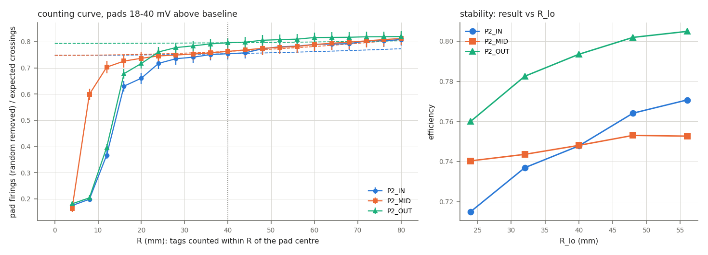
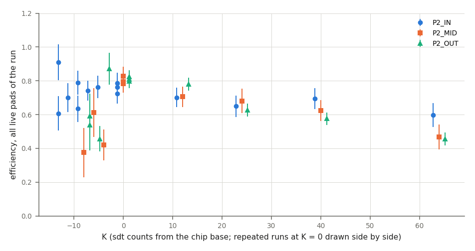
The result: efficiency against threshold − baseline
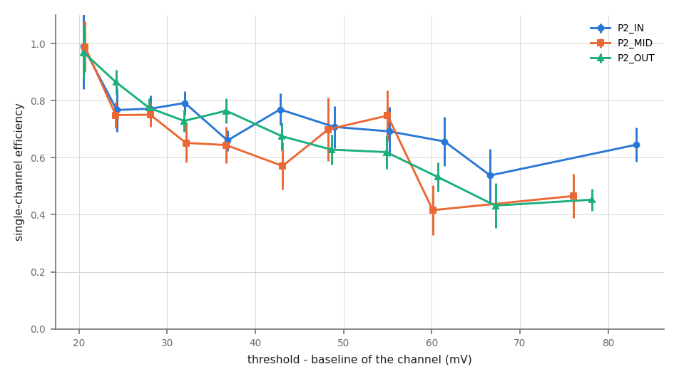
| threshold − baseline | P2_IN | P2_MID | P2_OUT |
|---|---|---|---|
| 22-30 mV | 0.77 ± 0.05 | 0.75 ± 0.04 | 0.77-0.86 ± 0.04 |
| 30-40 mV | 0.66-0.79 ± 0.04 | 0.64-0.65 ± 0.07 | 0.73-0.76 ± 0.04 |
| 40-58 mV | 0.69-0.77 ± 0.07 | 0.57-0.75 ± 0.10 | 0.62-0.68 ± 0.05 |
| 58-100 mV | 0.54-0.66 ± 0.08 | 0.42-0.47 ± 0.09 | 0.43-0.53 ± 0.06 |
| plateau, 18-40 mV | 0.75 ± 0.02 | 0.75 ± 0.03 | 0.79 ± 0.02 |
The shape agrees with the first, relative measurement (each channel divided by its own mean over the scan): flat up to ~40 mV, then down by ~30 % at 70-80 mV.
The relative measurement it confirms
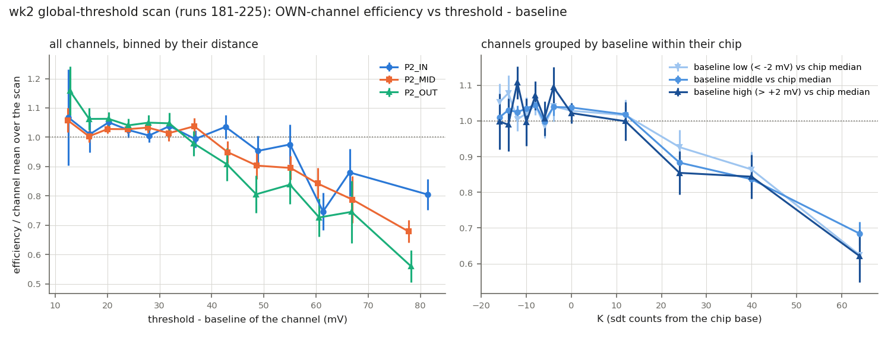
How the method got here
The number moved on the way, and each step is a lesson for future measurements:
- Pad efficiency (any pad within 15 mm of the prediction): 0.3-0.5, and blind pads at 0.06-0.23. Neighbours help.
- Own pad only: blind pads at 0, but 0.07-0.3: the tracking dominates. Only ratios are usable (the relative curve).
- Fit of the firing profile with a box ⊗ Gauss model: gave the smearing (3 / 8.5 mm) and showed that the pad response is not wider than the pad, but the efficiency moved by ±20 % with the fit's weighting and failed on the lattice.
- Self-made tags vs scintillator tags: 0.44-0.57 against 0.75-0.79, the impurity.
- First counting version (radius up to 40 mm, density in a circle): 0.80 / 0.84 / 0.86, the figure below. The simulation then showed two biases: a curve still rising at 40 mm (−5 % at σ = 8 mm) and the circle-counting of lattice points (±2-3 %). Both were fixed by counting out to 80 mm, taking the density in pad cells, and subtracting random hits from the off-time window. Final: 0.75 / 0.75 / 0.79.
The first counting version (eff_integral.png)
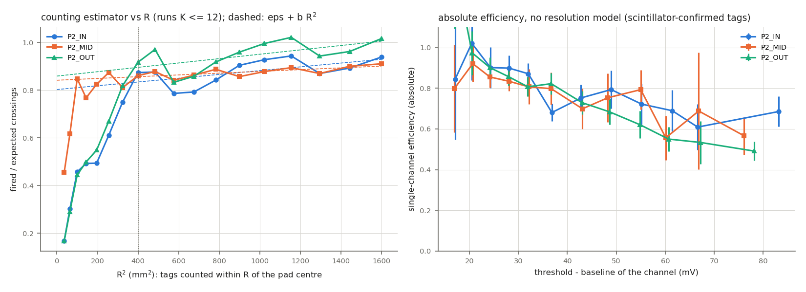
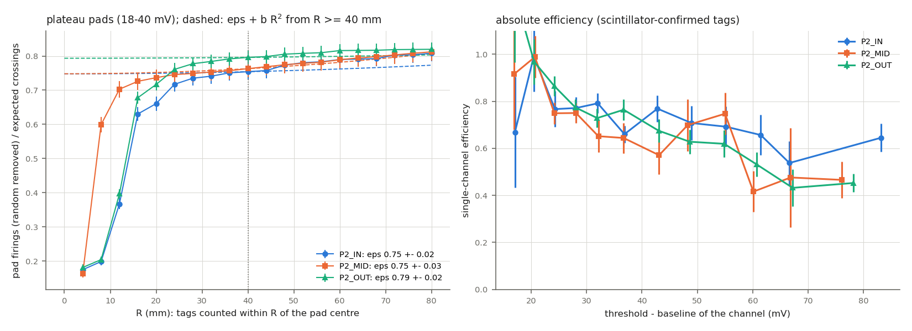
channel_efficiency.py measure): counting curve against R
up to 80 mm with the ε + b R² line from 40 mm, and the result against threshold − baseline.Limits and next steps
- Statistics: one week gives ~900 scintillator tags per chamber per run: curves for groups of channels, not one curve per channel. Per-channel curves need several weeks, or larger scintillators.
- Masked neighbours: pads with a masked pad within 40 mm are dropped; at the lowest thresholds few are left. The trimmed configurations (raise instead of mask) will keep many more.
- Scattering tails in the extrapolated chambers: +0.02-0.03 between Rlo = 40 and 56 mm (quoted as systematic).
- Baselines were measured on 13 Nov, after the scan (and after a reboot). For the next scan, measure the monitor map at the start.
- Random scintillator coincidences are negligible (0.19 Hz × 170 ns window).
Running it
Everything is one program, channel_efficiency.py in P2_basket_analysis/cosmic_vmm_analysis
(branch eff-vs-threshold-distance), with a step-by-step how-to in CHANNEL_EFFICIENCY.md. On lxplus:
# Python with numpy/pandas/scipy, and where the pad map is
source /cvmfs/sft.cern.ch/lcg/views/LCG_105/x86_64-el9-gcc13-opt/setup.sh
export VMM_QA_DIR=~/tpc/vmm_qa
# 1. decode the runs into per-muon records (about 1 min per run, 3 at a time)
python3 channel_efficiency.py dump --runs-dir /eos/experiment/ntof/data/x17/p2_sps_july/vmm_cosmic_run_oct26/runs \
--out ~/wk2tags80 --jobs 3 181 184 187 190 193 196 199 202 205 208 211 214 218 221 223 225
# 2. threshold, baseline and their distance for every channel in every run (mV)
python3 channel_efficiency.py thr-table ~/wk2tags80 --map map_Km18_i5_unmasked.json --sdtcal sdtcal.json \
--run-sdt run_sdt.json -o thr.csv
# 3. the efficiency, then the verification figures of this page
python3 channel_efficiency.py measure ~/wk2tags80 thr.csv out_eff --scint 140:310
python3 channel_efficiency_report.py out_eff ~/wk2tags80 out_eff/figs
# closure tests (3 s), after any change to the code
python3 test_channel_efficiency.pydump reads the raw captures and writes one record per tag. thr-table needs one monitor map
(baseline and threshold per channel, measured on the chips) plus each chip's mV-per-DAC calibration and threshold in each
run (sdt-table, run on the DAQ box). measure does the counting; --scint is the
scintillator window, --rlo the radius Rlo (default 40 mm), --clean the distance to the
nearest masked pad (default 40 mm).
Glossary
- tag
- a muon candidate: a clean cluster in each of two chambers with the right time difference.
- probe
- the third chamber, whose pads are being measured.
- prediction error, smearing, σ
- how far the predicted point is from where the muon really crossed.
- pad lattice
- the grid of pad centres; the same in the three chambers.
- off-time window / sideband
- the same tags, hits looked for 4 µs later: only random hits are there.
- scintillator-confirmed
- the tag comes 140-310 ns after a scintillator coincidence: a real muon.
- Rlo
- the radius beyond which all of a pad's own muons are counted (40 mm, checked from 24 to 56 mm).
- threshold − baseline
- how far above its own baseline a channel's threshold sits, in mV.
- K
- threshold step of the scan, in DAC counts from each chip's base threshold (1 count ≈ 0.75 mV).
- blind pad
- a channel whose baseline is above the threshold; it cannot fire on signals.
- closure test
- running the analysis on simulated data where the answer is known.